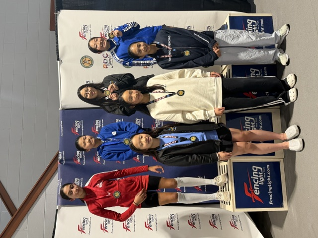

Vol. I — No. 007 · Chatham, N.J.
SAMPLE
Tuesday · October 14, 2026
Canadian Epeeist Edges World No. 4 in Vancouver Grand Prix Final
A late-priority surge lifts a home-strip underdog past the draw’s top remaining seed.
Gazette Staff · Pretend Copy
VANCOUVER — Canadian epeeist Avery Chen (world No. 47) upset Italy’s Luca Moretti, the world’s No. 4, 15–14 in a one-touch priority finish. Chen trailed 9–12 after two periods, then closed with three unanswered touches before priority decided it. Moretti had looked in control through pools and early direct elimination, including a 15–9 quarterfinal over France’s Elise Marchand.
Chen’s coach called the final “a textbook distance reset”: shorter advances, fewer searches, and a willingness to invite the double when ahead in priority. Bronze went to Korea’s Min-jun Park over the United States’ Jordan Hale, 15–11. Hale’s deep run still moves him into the early-season Grand Prix points mix and gives American juniors a clear study tape.
Why it matters here: Grand Prix finals reward the same habits we drill on Monday night — hold distance when you are down, and do not chase when priority is yours. Chen’s last three touches came off retreats, not lunges. Bout video is expected on FencingTV and the FIE results pages this week. Elite FC fencers who streamed the final should bring one stolen idea to Tuesday Advanced. For readers new to priority: after a draw for who advances on a tie, the holder wins any double — which is exactly how Chen closed.
New Letters on the Wall
| Name | Rating | Event |
|---|
| Alex Rivera | E26 | Y14 ME |
| Jordan Lee | D26 | Cadet WE |
| Sam Patel | E26 | Y12 ME |
Three Elite FC letters this cycle — celebrate on the wall board and ask how the DE felt.
Ben Gutenberg SYC — Elite FC
| Fencer | Finish |
|---|
| Mila Siu | 3rd, Y12 WE |
| Penny Young | 6th, Y12 WE |
| Stella Kuo | T16, Y14 WE |
Strong youth weekend for the club. Congrats to all three — and to the travel parents.
USA Fencing Posts Revised Youth Points Timeline for Winter
USA Fencing published a revised winter timeline for youth points rollups, clarifying when Super Youth Circuit and Regional Open results lock into the national youth standings. Two mid-season freeze dates shift later by one week so late November SYCs still count toward December seeding. Cadet and junior rollups are unchanged. Parents tracking Y10–Y14 paths should re-check the points FAQ on usafencing.org before the next entry window. Coaches say the extra week helps families who travel every other weekend keep paperwork honest without racing a Friday close. Print the FAQ page and tape it inside the gear bag — the freeze date is easier to miss than a bout time.
Epee Notebooks — Early Duals
High-school epee duals are already on the board across North Jersey. A neighbor tip — vetted for this pretend run — has Chatham boys opening with a 14–8 dual win last week, with several Elite FC fencers expected to see strip time as rosters settle. Girls’ squads around Morris County report similar early tests. Dual-meet season is where club distance work meets school dual pressure: short warm-ups, loud gyms, and referees who want clean attacks. Watch NJ.com fencing briefs for confirmed scores before you quote hallway rumors. Dual season rewards the fencer who can reset distance in a noisy gym — exactly what Advanced drills on Tuesday at 6:00.

On the strip. Club newsletter photo — Elite FC session. Photo desk pick for this issue.
Musketeers meet Monday at 4:30; Advanced meets Tuesday at 6:00. If your group moved, the desk whiteboard wins over last week’s handout. Photograph day was a good one — six medals, one frame, and a reminder that youth weekends are team sports even when the bout is one-on-one.
Who’s Entered — Go Cheer
| Tournament | Events (Epee) | When | Elite FC Entered |
|---|
| Medeo Youth Challenge #3 | Y12 WE · Y10 Mixed Epee | Sun Oct 11 | Jiang Christina (Y12 WE); Cheng Bryce (Y10 Mixed Epee) |
| Hub City Fall Epee Open, New Brunswick | Y14 / Cadet / Senior Mixed | Oct 18 | Ask at the desk — spots still open |
| Garden State RJC, Edison | Cadet / Junior | Oct 25 | Travel interest forming |
Cheer tip: Medeo is the near-term priority. If you are free Sunday, go support Christina and Bryce — and enter the next local if your event is open. Hub City still has room; put your name on the desk clipboard if you want a ride share to New Brunswick.
Page Two · Club Calendar & Streaming
SAMPLE
Vol. I — No. 007
This Week at Elite FC
| When | What’s On |
|---|
| Mon 4:30 | Musketeers group class |
| Tue 6:00 | Advanced group class |
| Wed–Fri | Classes + open fencing (desk hours) |
| Saturday | Youth practice blocks — ask coach |
| Sunday | Closed · Medeo #3 away |
Times from this week’s club forward. Desk whiteboard wins if a group moved. Loaner masks sign out before warm-up, not after the lesson starts. Parents: pick-up runs through the lobby — please wait off the strip edge during Advanced. Saturday youth blocks rotate by age; ask Coach which strip your group owns before you unpack.
Where to Watch
| Event | When | Watch |
|---|
| Vancouver GP epee finals (replay) | Anytime | FencingTV / YT |
| October NAC Div I epee finals | Anytime | USA Fencing YT |
| Casablanca Epee World Cup | Oct 15–18 | FencingTV |
| First to 15 podcast | Anytime | Podcast apps |
| November NAC Div I epee | Nov 20–23 | USA Fencing YT |
Watch like a fencer: count advances before each touch. Pause priority twice — feet, then blade.
After the SYC
Ben Gutenberg gave Elite FC three finishes for the wall: Mila Siu’s Y12 bronze, Penny Young’s sixth in the same event, and Stella Kuo’s top-16 in Y14. Ask them what changed between pools and DEs — usually rest, simple actions, and fewer hero lunges.
Medeo Youth Challenge #3 is Sunday. Christina Jiang and Bryce Cheng are on the sheet. Tuesday’s slip waits for Monday club fencing so results land beside the national lead. Comic and deadlines were cut from this pretend budget; TV stayed because the include checkboxes won.
Ratings rows on page one (Rivera, Lee, Patel) are invented celebration fuel for the dry run. The SYC finishes and Medeo names are the real Frank-forwarded facts this sheet is built around. If you medal next week, tell the desk the same night so the wall board updates before Thursday practice.
What the Signup Board Is For
The board exists to nudge more Elite FC names onto start lists. Cap stays at a few tournaments so names stay readable. If one event fills with twenty clubmates, we show fewer events — not smaller type. Medeo is this week’s cheer target; Hub City and Garden State RJC are next on the local path.
Parents new to AskFRED: check event weapon filters before you pay. This paper is epee only. Foil and saber stay off the sheet even when a weekend mixed weapons. Travel groups form at the desk clipboard by Wednesday so drivers can plan Edison or New Brunswick rides.
If your name is missing from a tournament you already entered, tell Frank or the desk before the next issue — the board is only as good as the start list we were sent.
How Dual Meets Differ From Club
School duals compress warm-ups and stack bouts. Referees want clear attacking intent; passivity costs arrive faster than Saturday open fencing. Bring a notebook: one idea per bout is enough. The Chatham 14–8 tip in this issue is labeled pretend — confirm on NJ.com before you quote it in the hallway.
Returning varsity fencers should lock school tryout dates with their coach; club Advanced on Tuesday still covers the distance work duals punish when you forget it. Freshmen: salute cleanly, check your body cord twice, and ask a senior where the strip assignment sheet lives.
County rivals will scout the same YouTube finals we listed on the watch board. Steal the footwork, not the drama. If your school posts dual results late, email the Gazette tip address the same night — hallway memory fades by Wednesday.
About This Pretend Run
This sheet tests the budget-demo pipeline: approvals JSON in, HTML and PDF out, photo copied into the issue folder, sources logged. Masthead flanks drop price and “Epee Only” lines; the footer carries the fun-only disclaimer on both pages. Articles stay box-free with column rules; borders stay on utility tables only.
Comic and deadlines were cut from Frank’s pretend budget. TV stayed because include checkboxes won over the “cut unless inches free” note. Ratings rows (Rivera, Lee, Patel) are invented celebration fuel; SYC finishes and Medeo names are from Frank-forwarded club facts.
Vol. I — No. 007. Publish date Tuesday, October 14, 2026. Not for hallway distribution until a real week is green-lit. Past pretend proofs live beside this folder in git.
Strip Notes From Vancouver
Chen’s closing period is worth a freeze-frame: three retreats, three lights, no chase. Moretti’s early lead came from searches that worked until they didn’t. Hale’s bronze-medal bout against Park is the cleaner teaching tape for cadets — fewer priority gymnastics, more honest distance.
Replay tip: watch the last minute muted once, then with commentary. You will notice footwork you missed while listening to the call. Bring that habit to club video night if coaches queue a NAC final. Cadets: pause every time the referee walks the strip — that is where distance arguments get won.
Youth Points in One Sentence
The revised winter freeze dates mean a late-November SYC can still feed December seeding — but only if you entered the right age event and the result posts before the lock. When in doubt, screenshot the FAQ the day you register.
Y10 and Y12 families: the rollup does not care how loud the gym was — it cares that the event code matches. Double-check age category before you hit pay on AskFRED. If a result looks missing after seven days, email USA Fencing membership support with the tournament ID, not a screenshot of the livestream.
Next Week’s Ask
Real issues need real start lists, real ratings emails, and Frank’s budget checkboxes. This pretend packet proves the folder shape: issue.html, paper.pdf, approvals.json, sources.json, and media/. Green-light a live Monday when the pipeline feels boring — boring is the goal.
Until then, treat every invented national name as layout fuel and every Frank-forwarded club fact as gospel for the wall board. Push the issue folder when the PDF looks right; keep submissions/ out of git.